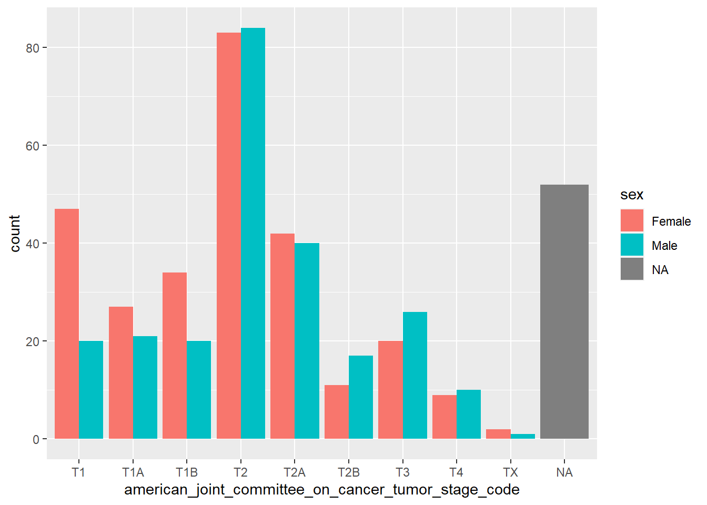

Last updated: 2021-02-19
Checks: 7 0
Knit directory: test/
This reproducible R Markdown analysis was created with workflowr (version 1.6.2). The Checks tab describes the reproducibility checks that were applied when the results were created. The Past versions tab lists the development history.
Great! Since the R Markdown file has been committed to the Git repository, you know the exact version of the code that produced these results.
Great job! The global environment was empty. Objects defined in the global environment can affect the analysis in your R Markdown file in unknown ways. For reproduciblity it's best to always run the code in an empty environment.
The command set.seed(20210219) was run prior to running the code in the R Markdown file. Setting a seed ensures that any results that rely on randomness, e.g. subsampling or permutations, are reproducible.
Great job! Recording the operating system, R version, and package versions is critical for reproducibility.
Nice! There were no cached chunks for this analysis, so you can be confident that you successfully produced the results during this run.
Great job! Using relative paths to the files within your workflowr project makes it easier to run your code on other machines.
Great! You are using Git for version control. Tracking code development and connecting the code version to the results is critical for reproducibility.
The results in this page were generated with repository version e66e992. See the Past versions tab to see a history of the changes made to the R Markdown and HTML files.
Note that you need to be careful to ensure that all relevant files for the analysis have been committed to Git prior to generating the results (you can use wflow_publish or wflow_git_commit). workflowr only checks the R Markdown file, but you know if there are other scripts or data files that it depends on. Below is the status of the Git repository when the results were generated:
Ignored files:
Ignored: .Rproj.user/
Untracked files:
Untracked: analysis/test2.Rmd
Untracked: data/luad_tcga_pan_can_atlas_2018_clinical_data.tsv
Note that any generated files, e.g. HTML, png, CSS, etc., are not included in this status report because it is ok for generated content to have uncommitted changes.
These are the previous versions of the repository in which changes were made to the R Markdown (analysis/test.Rmd) and HTML (docs/test.html) files. If you've configured a remote Git repository (see ?wflow_git_remote), click on the hyperlinks in the table below to view the files as they were in that past version.
| File | Version | Author | Date | Message |
|---|---|---|---|---|
| html | e66e992 | BastianEichmueller | 2021-02-19 | Build site. |
| Rmd | 4135d10 | BastianEichmueller | 2021-02-19 | wflow_publish(files = "analysis/test.Rmd") |
| html | d64ca74 | BastianEichmueller | 2021-02-19 | Build site. |
| html | 4b8778d | BastianEichmueller | 2021-02-19 | Build site. |
| Rmd | 2eda36f | BastianEichmueller | 2021-02-19 | wflow_publish(files = "analysis/test.Rmd") |
library(tidyverse)-- Attaching packages ----------------------------------------------------------------------------------------- tidyverse 1.3.0 --v ggplot2 3.3.2 v purrr 0.3.4
v tibble 3.0.3 v dplyr 1.0.0
v tidyr 1.1.0 v stringr 1.4.0
v readr 1.3.1 v forcats 0.5.0-- Conflicts -------------------------------------------------------------------------------------------- tidyverse_conflicts() --
x dplyr::filter() masks stats::filter()
x dplyr::lag() masks stats::lag()dat <- read_tsv("data/luad_tcga_pan_can_atlas_2018_clinical_data.tsv") %>%
select(
where(
~sum(!is.na(.x)) > 0
)
) %>%
tibble(.name_repair = "universal")Parsed with column specification:
cols(
.default = col_character(),
`Diagnosis Age` = col_double(),
`Aneuploidy Score` = col_double(),
`Buffa Hypoxia Score` = col_double(),
`Last Communication Contact from Initial Pathologic Diagnosis Date` = col_double(),
`Birth from Initial Pathologic Diagnosis Date` = col_double(),
`Last Alive Less Initial Pathologic Diagnosis Date Calculated Day Value` = col_double(),
`Disease Free (Months)` = col_double(),
`Months of disease-specific survival` = col_double(),
`Fraction Genome Altered` = col_double(),
`Neoplasm Histologic Grade` = col_logical(),
`MSI MANTIS Score` = col_double(),
`MSIsensor Score` = col_double(),
`Mutation Count` = col_double(),
`Overall Survival (Months)` = col_double(),
`Progress Free Survival (Months)` = col_double(),
`Primary Lymph Node Presentation Assessment` = col_logical(),
`Ragnum Hypoxia Score` = col_double(),
`Number of Samples Per Patient` = col_double(),
`Patient Weight` = col_logical(),
`Winter Hypoxia Score` = col_double()
)See spec(...) for full column specifications.New names:
* `Study ID` -> Study.ID
* `Patient ID` -> Patient.ID
* `Sample ID` -> Sample.ID
* `Diagnosis Age` -> Diagnosis.Age
* `Neoplasm Disease Stage American Joint Committee on Cancer Code` -> Neoplasm.Disease.Stage.American.Joint.Committee.on.Cancer.Code
* ...names(dat) <- tolower(gsub("\\.", "_", names(dat)))
head(dat)# A tibble: 6 x 96
study_id patient_id sample_id diagnosis_age neoplasm_diseas~ american_joint_~
<chr> <chr> <chr> <dbl> <chr> <chr>
1 luad_tc~ TCGA-05-4~ TCGA-05-~ 70 STAGE IV 6TH
2 luad_tc~ TCGA-05-4~ TCGA-05-~ 67 STAGE IB 6TH
3 luad_tc~ TCGA-05-4~ TCGA-05-~ 79 STAGE IIIA 6TH
4 luad_tc~ TCGA-05-4~ TCGA-05-~ 68 STAGE IB 6TH
5 luad_tc~ TCGA-05-4~ TCGA-05-~ 66 STAGE IIIA 6TH
6 luad_tc~ TCGA-05-4~ TCGA-05-~ 70 STAGE IA 5TH
# ... with 90 more variables: aneuploidy_score <dbl>,
# buffa_hypoxia_score <dbl>, cancer_type <chr>,
# tcga_pancanatlas_cancer_type_acronym <chr>, cancer_type_detailed <chr>,
# center_of_sequencing <chr>,
# last_communication_contact_from_initial_pathologic_diagnosis_date <dbl>,
# birth_from_initial_pathologic_diagnosis_date <dbl>,
# last_alive_less_initial_pathologic_diagnosis_date_calculated_day_value <dbl>,
# disease_free__months_ <dbl>, disease_free_status <chr>,
# months_of_disease_specific_survival <dbl>,
# disease_specific_survival_status <chr>, ethnicity_category <chr>,
# form_completion_date <chr>, fraction_genome_altered <dbl>,
# neoadjuvant_therapy_type_administered_prior_to_resection_text <chr>,
# icd_10_classification <chr>,
# international_classification_of_diseases_for_oncology__third_edition_icd_o_3_histology_code <chr>,
# international_classification_of_diseases_for_oncology__third_edition_icd_o_3_site_code <chr>,
# informed_consent_verified <chr>, in_pancan_pathway_analysis <chr>,
# msi_mantis_score <dbl>, msisensor_score <dbl>, mutation_count <dbl>,
# new_neoplasm_event_post_initial_therapy_indicator <chr>,
# oncotree_code <chr>, overall_survival__months_ <dbl>,
# overall_survival_status <chr>, other_patient_id <chr>,
# american_joint_committee_on_cancer_metastasis_stage_code <chr>,
# neoplasm_disease_lymph_node_stage_american_joint_committee_on_cancer_code <chr>,
# american_joint_committee_on_cancer_tumor_stage_code <chr>,
# person_neoplasm_cancer_status <chr>, progress_free_survival__months_ <dbl>,
# progression_free_status <chr>, prior_diagnosis <chr>, race_category <chr>,
# radiation_therapy <chr>, ragnum_hypoxia_score <dbl>,
# number_of_samples_per_patient <dbl>, sample_type <chr>, sex <chr>,
# somatic_status <chr>, `__10p_status` <chr>, `__10q_status` <chr>,
# `__11p_status` <chr>, `__11q_status` <chr>, `__12p_status` <chr>,
# `__12q_status` <chr>, `__13__13q__status` <chr>, `__14__14q__status` <chr>,
# `__15__15q__status` <chr>, `__16p_status` <chr>, `__16q_status` <chr>,
# `__17p_status` <chr>, `__17q_status` <chr>, `__18p_status` <chr>,
# `__18q_status` <chr>, `__19p_status` <chr>, `__19q_status` <chr>,
# `__1p_status` <chr>, `__1q_status` <chr>, `__20p_status` <chr>,
# `__20q_status` <chr>, `__21__21q__status` <chr>, `__22__22q__status` <chr>,
# `__2p_status` <chr>, `__2q_status` <chr>, `__3p_status` <chr>,
# `__3q_status` <chr>, `__4p_status` <chr>, `__4q_status` <chr>,
# `__5p_status` <chr>, `__5q_status` <chr>, `__6p_status` <chr>,
# `__6q_status` <chr>, `__7p_status` <chr>, `__7q_status` <chr>,
# `__8p_status` <chr>, `__8q_status` <chr>, `__9p_status` <chr>,
# `__9q_status` <chr>, subtype <chr>,
# tissue_prospective_collection_indicator <chr>,
# tissue_retrospective_collection_indicator <chr>, tissue_source_site <chr>,
# tumor_disease_anatomic_site <chr>, tumor_type <chr>,
# winter_hypoxia_score <dbl>d <- transmute(dat,
diagnosis_age = round(-birth_from_initial_pathologic_diagnosis_date/365.24),
sex = factor(sex),
race_category = factor(race_category),
american_joint_committee_on_cancer_tumor_stage_code = factor(american_joint_committee_on_cancer_tumor_stage_code),
mutation_count
)
d# A tibble: 566 x 5
diagnosis_age sex race_category american_joint_committee_o~ mutation_count
<dbl> <fct> <fct> <fct> <dbl>
1 71 Male <NA> T2 191
2 67 Male <NA> T2 299
3 80 Female <NA> T3 311
4 68 Male <NA> T2 1547
5 67 Male <NA> T2 117
6 70 Male <NA> T1 210
7 59 Female <NA> T2 518
8 77 Male <NA> T4 230
9 77 Male <NA> T4 1287
10 65 Male <NA> T2 749
# ... with 556 more rowswith(d,
table(round(diagnosis_age, digits = -1), sex)
) sex
Female Male
30 1 0
40 7 9
50 31 17
60 88 78
70 77 77
80 52 40
90 4 2with(d,
table(race_category, american_joint_committee_on_cancer_tumor_stage_code)
) american_joint_committee_on_cancer_tumor_stage_code
race_category T1 T1A T1B T2 T2A T2B T3 T4 TX
American Indian or Alaska Native 0 0 0 1 0 0 0 0 0
Asian 1 1 0 3 2 0 0 0 1
Black or African American 9 6 7 10 10 2 6 2 0
White 52 41 46 111 66 25 33 12 2d %>%
ggplot(aes(x=american_joint_committee_on_cancer_tumor_stage_code, col=sex))+
geom_bar(position = "dodge")+
theme_dark()
with(d,
chisq.test(sex, american_joint_committee_on_cancer_tumor_stage_code)
)Warning in chisq.test(sex, american_joint_committee_on_cancer_tumor_stage_code):
Chi-squared approximation may be incorrect
Pearson's Chi-squared test
data: sex and american_joint_committee_on_cancer_tumor_stage_code
X-squared = 15.323, df = 8, p-value = 0.05316d %>%
lm(mutation_count~sex+diagnosis_age+american_joint_committee_on_cancer_tumor_stage_code,
data=.)
Call:
lm(formula = mutation_count ~ sex + diagnosis_age + american_joint_committee_on_cancer_tumor_stage_code,
data = .)
Coefficients:
(Intercept)
520.957
sexMale
37.299
diagnosis_age
-3.920
american_joint_committee_on_cancer_tumor_stage_codeT1A
-38.941
american_joint_committee_on_cancer_tumor_stage_codeT1B
1.123
american_joint_committee_on_cancer_tumor_stage_codeT2
3.376
american_joint_committee_on_cancer_tumor_stage_codeT2A
29.835
american_joint_committee_on_cancer_tumor_stage_codeT2B
13.728
american_joint_committee_on_cancer_tumor_stage_codeT3
54.423
american_joint_committee_on_cancer_tumor_stage_codeT4
21.233
american_joint_committee_on_cancer_tumor_stage_codeTX
-210.432 d %>%
ggplot(aes(x=diagnosis_age, y=mutation_count))+
geom_point()Warning: Removed 88 rows containing missing values (geom_point).
sessionInfo()R version 3.6.0 (2019-04-26)
Platform: x86_64-w64-mingw32/x64 (64-bit)
Running under: Windows 10 x64 (build 18363)
Matrix products: default
locale:
[1] LC_COLLATE=English_Europe.1252 LC_CTYPE=English_Europe.1252
[3] LC_MONETARY=English_Europe.1252 LC_NUMERIC=C
[5] LC_TIME=English_Europe.1252
attached base packages:
[1] stats graphics grDevices utils datasets methods base
other attached packages:
[1] forcats_0.5.0 stringr_1.4.0 dplyr_1.0.0 purrr_0.3.4
[5] readr_1.3.1 tidyr_1.1.0 tibble_3.0.3 ggplot2_3.3.2
[9] tidyverse_1.3.0 workflowr_1.6.2
loaded via a namespace (and not attached):
[1] tidyselect_1.1.0 xfun_0.15 haven_2.3.1 colorspace_1.4-1
[5] vctrs_0.3.2 generics_0.0.2 htmltools_0.5.0 yaml_2.2.1
[9] utf8_1.1.4 blob_1.2.1 rlang_0.4.7 later_1.1.0.1
[13] pillar_1.4.6 withr_2.2.0 glue_1.4.1 DBI_1.1.0
[17] dbplyr_1.4.4 modelr_0.1.8 readxl_1.3.1 lifecycle_0.2.0
[21] munsell_0.5.0 gtable_0.3.0 cellranger_1.1.0 rvest_0.3.5
[25] evaluate_0.14 labeling_0.3 knitr_1.29 httpuv_1.5.4
[29] fansi_0.4.1 broom_0.7.0 Rcpp_1.0.5 promises_1.1.1
[33] backports_1.1.7 scales_1.1.1 jsonlite_1.7.0 farver_2.0.3
[37] fs_1.4.2 hms_0.5.3 digest_0.6.25 stringi_1.4.6
[41] rprojroot_1.3-2 grid_3.6.0 cli_2.0.2 tools_3.6.0
[45] magrittr_1.5 crayon_1.3.4 whisker_0.4 pkgconfig_2.0.3
[49] ellipsis_0.3.1 xml2_1.3.2 reprex_0.3.0 lubridate_1.7.9
[53] assertthat_0.2.1 rmarkdown_2.3 httr_1.4.1 rstudioapi_0.11
[57] R6_2.4.1 git2r_0.28.0 compiler_3.6.0